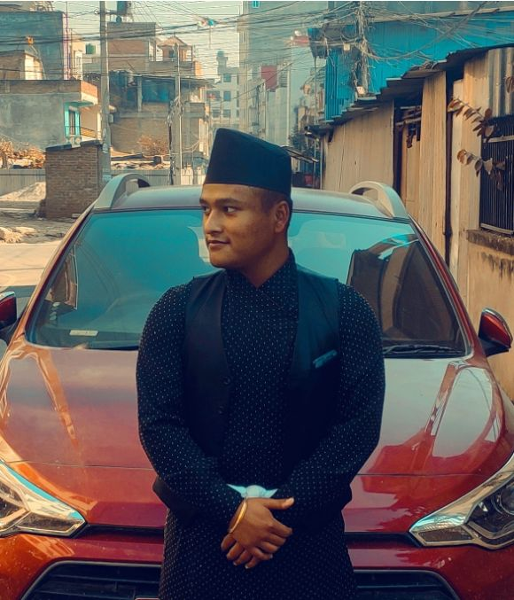

UneshPrajapati
Pharm.D. student and registered Assistant Pharmacist, from Kathmandu, now studying in Bengaluru.
“I see myself as a lifelong learner, always blending science with creativity, tradition with innovation, and service with knowledge.”

My story
I was born in Kathmandu, Nepal, and I’ve always been curious about learning and exploring different paths. After finishing school at Kamana Boarding High School and N.R. College, I earned a Diploma in Pharmacy in Nepal. Wanting to grow further in healthcare, I moved to India, where I’m now pursuing my Doctor of Pharmacy (Pharm.D.) at Nargund College of Pharmacy in Bengaluru.
Before starting my Pharm.D., I worked as a registered Assistant Pharmacist at Maunt Hospital, Vinayak Hospital and Maternity Home, and Subha Shree Medical Hall. Under senior pharmacists I handled patient counseling, inventory management and daily pharmacy operations, hands-on work that built my foundation for clinical pharmacy.
I also taught computers at Divine School in Tokha, introducing students to digital literacy and computing fundamentals. Teaching showed me another side of service: helping others grow through knowledge.
Serving as a patrol leader in the Nepal Peace Scout Force and as a term police in Nepal Police shaped my discipline, teamwork and leadership, while trainings in disaster management and security deepened my interest in service and resilience.
Looking back, my journey has been a mix of science and art, discipline and curiosity. Whether in a hospital, a classroom or with a musical instrument, each step has added to my growth.
Experience
- Jul – Sep 2024
Assistant Pharmacist, Pharmacy In-charge
Maunt Hospital Pvt. Ltd.
Dispensed OTC and prescribed medicines, counseled patients on correct route and dose, kept records of controlled drugs and managed inventory.
- May 2023 – Jul 2024
Primary Teacher, Computer
Divine School, Tokha
Taught subject material, learning strategies and social skills, planned lessons to local standards and assessed student progress through tests.
- Mar – May 2022
Assistant Pharmacist, Intern
Vinayak Hospital and Maternity Home (Pokhara Pharmacy)
Dispensing, patient counseling, prescription handling and controlled-drug records, plus inventory management.
- Mar 2021 – Feb 2022
Assistant Pharmacist, Intern
Subha Shree Medical Hall
Dispensing, patient counseling, prescription handling and controlled-drug records, plus inventory management.
Education
- In progress
Doctor of Pharmacy (Pharm.D.)
Nargund College of Pharmacy, Bengaluru
Rajiv Gandhi University of Health Sciences (RGUHS)
- 2022
Diploma in Pharmacy
School of Medical Sciences, Kathmandu
CTEVT
Beyond the pharmacy
Newari music
Trained in the traditional Dhime and Pachima drums, and the flute. I also sing.
Service
Patrol Leader in the Nepal Peace Scout Force and term police in Nepal Police.
Training
Disaster management and security trainings.
Photography
Traveling and capturing nature and the heritage of Nepal.
Gallery
Moments from home, the heritage and landscapes of the Kathmandu Valley.
Let’s get in touch
For questions, collaborations or just to say hello, send me an email.
contact@uneshprajapati.com.npswapu@uneshprajapati.com.np